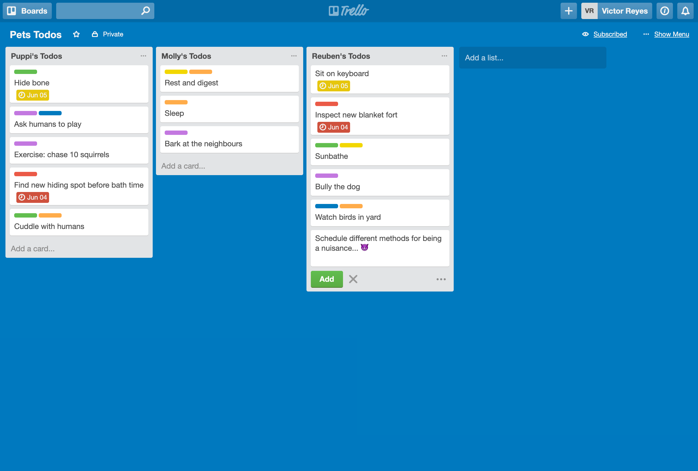
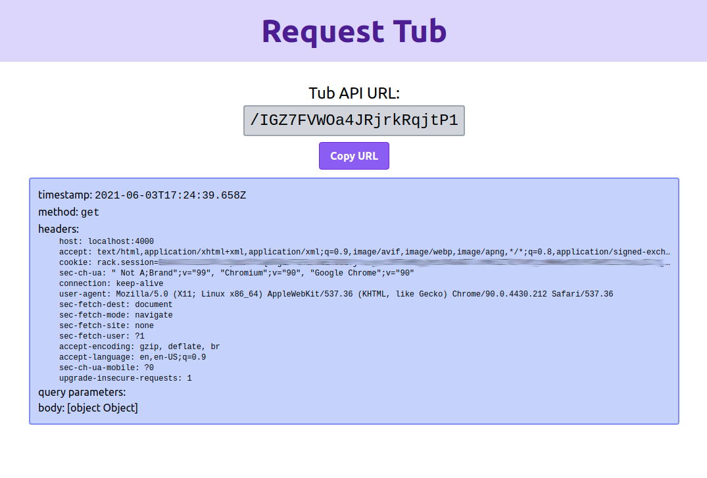
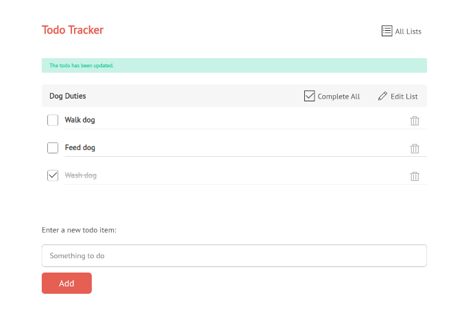

Andrew R. Jones
I'm a full-stack software engineer based in Austin, Texas with experience in Ruby, JavaScript/Node.js, React, Golang, AWS, and Docker.
Most recently, I co-created Gander, a full-stack review app solution that deploys preview applications on your AWS infrastructure based on your GitHub pull requests.

Gander automatically deploys a review app based on your GitHub code every time you make a pull request. A comment appears on your pull request with a live, shareable link to your review app.
Gander containerizes review apps into isolated environments and automatically disposes of them after the pull request is closed. Gander also provides each review app with its own database server, so that you can test the functionality of each pull request with its own independently persisted data.
READ THE GANDER CASE STUDYOther projects
-

Cello
Trello-like collaboration app built for MongoDB with a Node/Express backend and a React/Redux frontend
-

RequestTub
React/Express app for capturing and monitoring webhooks, built using Socket.IO and with PostgreSQL storage
-

Todos
Sinatra todo management app, built for PostgreSQL and using Erb